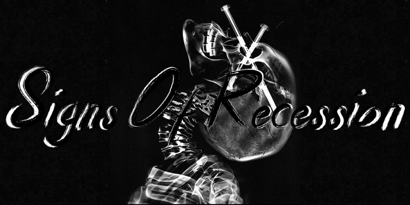
Nu Metal • Metalcore • Post Hardcore
Signs of Recession is a project by 17 year old Vann Toensing (me), I've loved nu metal, metalcore, and post hardcore forever now, I've always wanted to start my own band. Im finally starting something and finding people who are also into it and as of 3/6/26 we have everything we need to start but a drummer and possibly a DJ.
Vann T
"I like to yell."
Caleb B
"Dont talk to me like a machine."
Ashton R
"Safety third."
Adam S
tbd
Name Here
tbd
Name Here
tbd
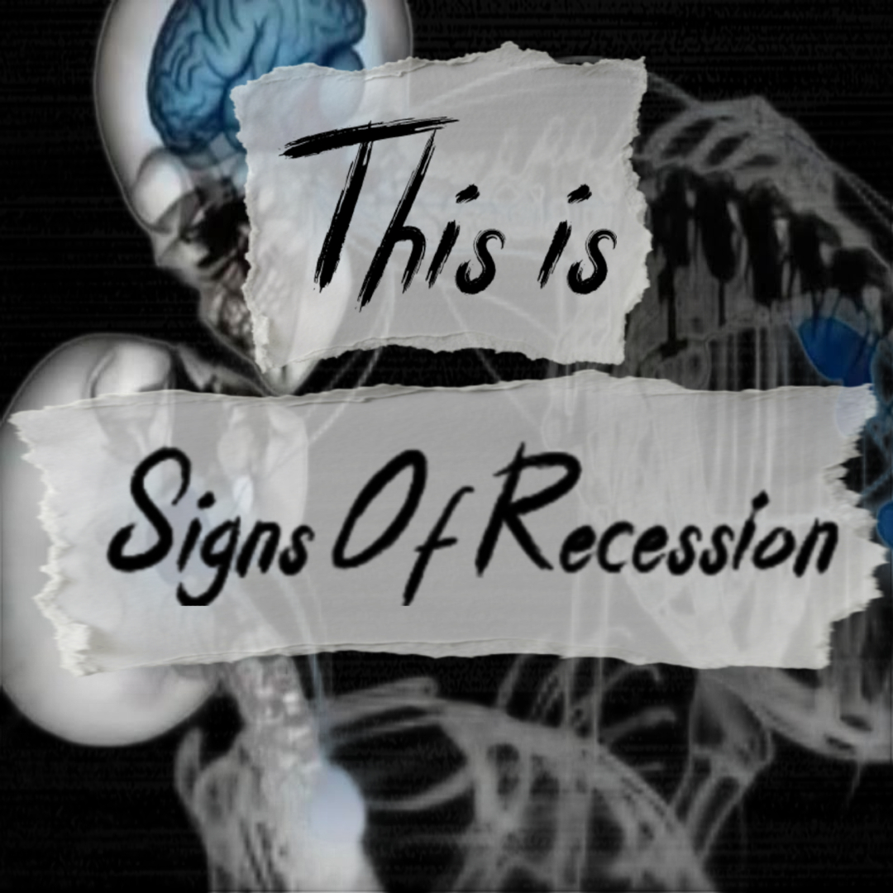
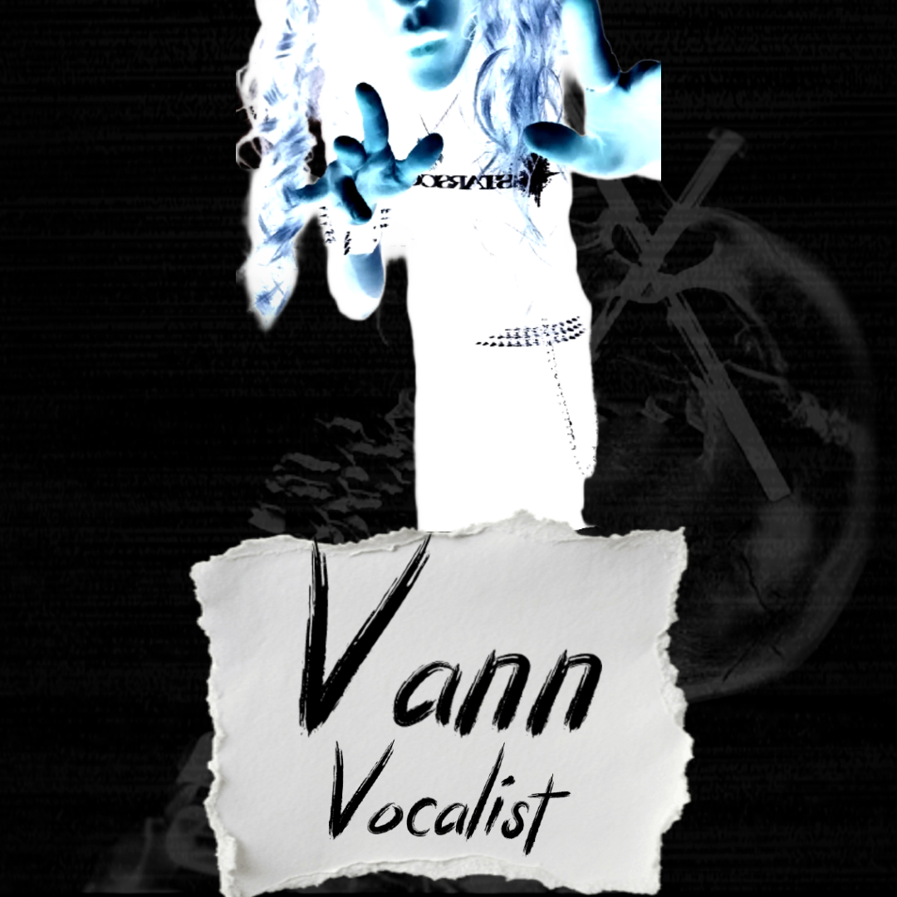
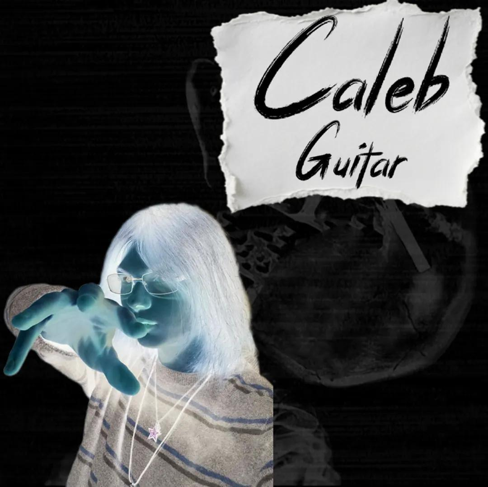
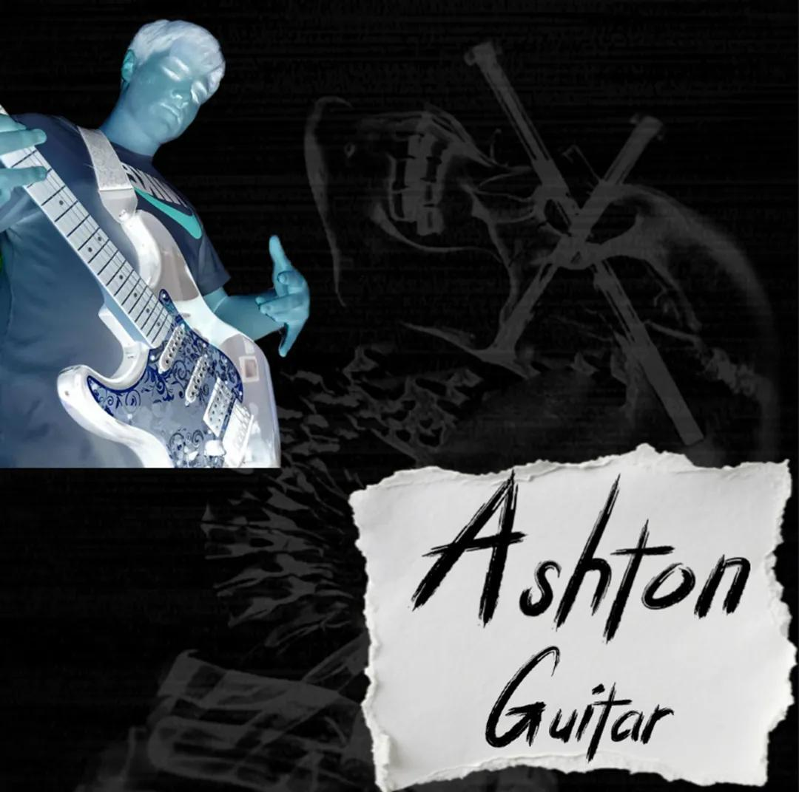
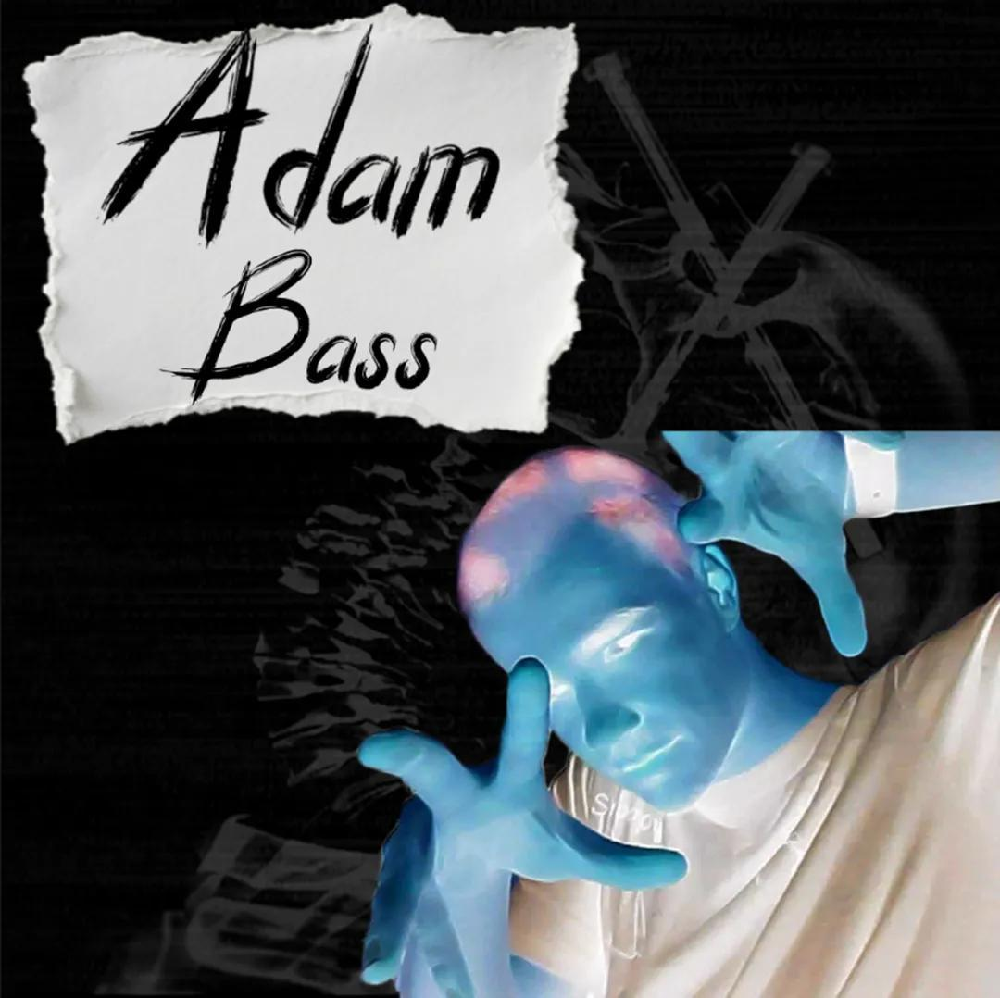
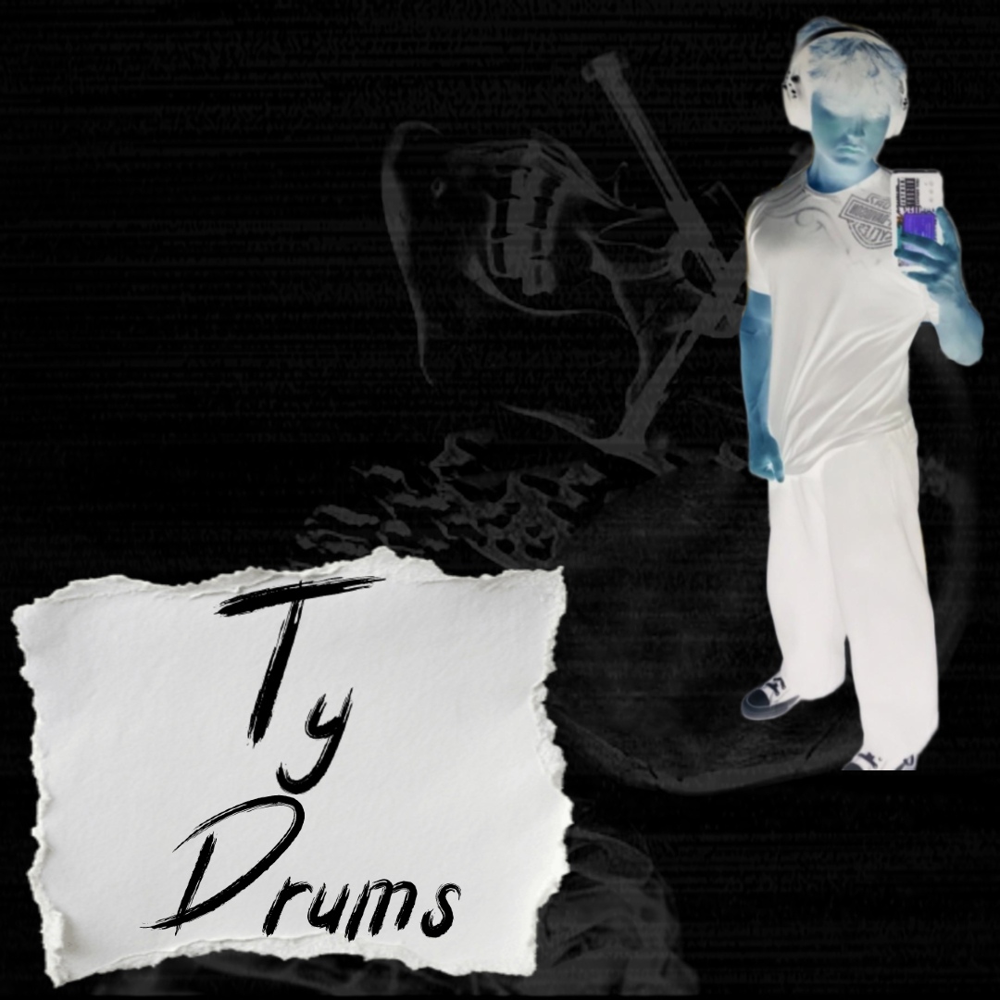
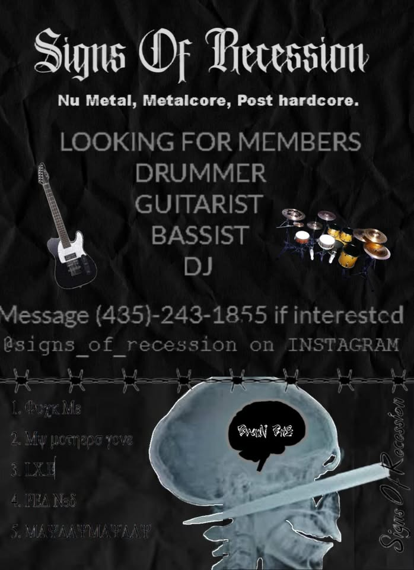
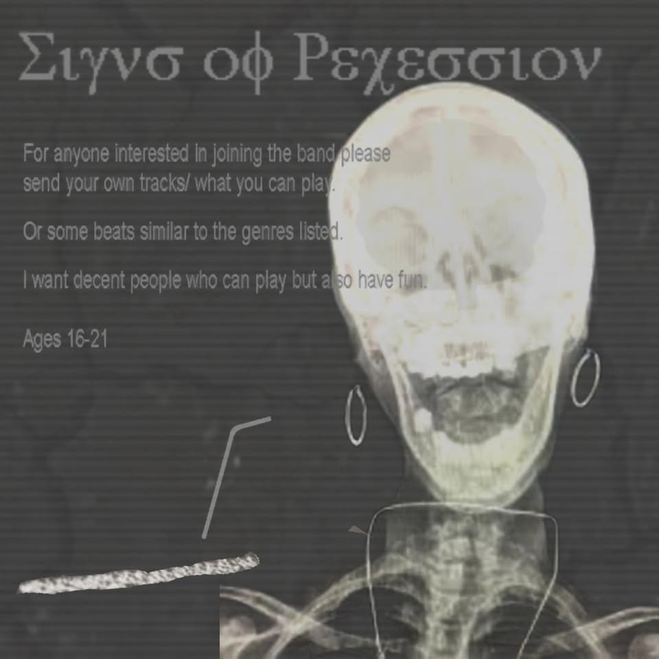
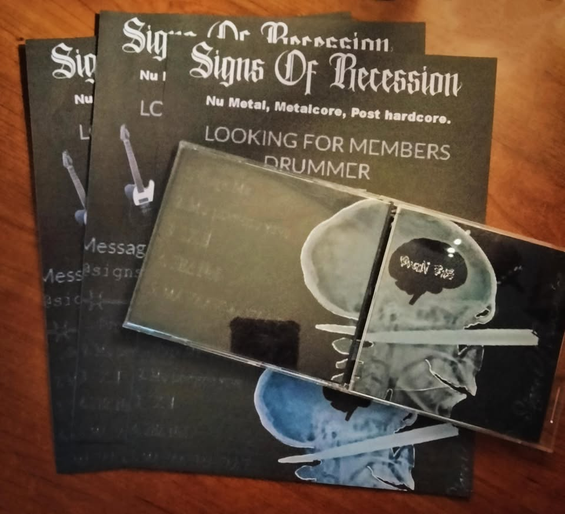
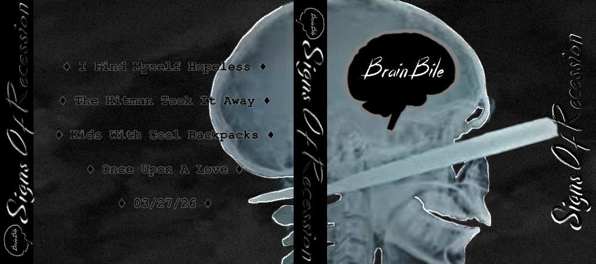
Inspired by several bands like Calm, Monkeynut, Phoenix Mourning, Norma Jean, Hondo Maclean, Nervepitch, and the general speed, intensity, and emotion of the genres.
Stay updated with news from the band and other shit.
FOLLOW ON INSTAGRAM